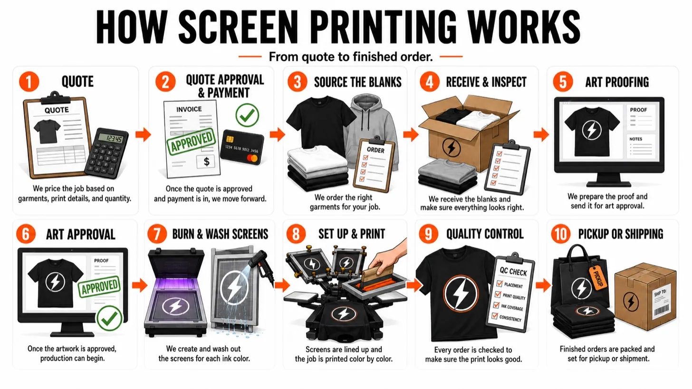

We'll be straight with you: the shop is in Warrenville, just across Naperville's north border. That's the whole point. Instead of a faceless online portal, Naperville gets a real print shop 15 minutes away, with proofs before printing, no order minimums, and pickup that skips shipping entirely.

Naperville is one of the biggest cities in Illinois, yet search "t-shirt printing Naperville" and you'll drown in national portals that ship from three states away. We're at 28W321 Warrenville Rd, a 10 to 15 minute drive from most of Naperville, whether you're coming from downtown, the Route 59 corridor, or the office parks along I-88.

Naperville generates a ridiculous amount of custom apparel: youth sports leagues and travel teams, school clubs and spiritwear, downtown shops and restaurants, churches, corporate teams, fundraisers, and race-day shirts. We print all of it, from a single tee to a few thousand pieces.
And if screen printing isn't the right method for your job, we'll say so. DTF printing covers small full-color runs with no screen fees, and embroidery handles the hats and polos. All three run under one roof, so you get the honest recommendation, not the upsell.

Ordering shirts from a portal means uploading art into the void and hoping. Ordering from a shop up the road means you can see a proof, ask a question and get a same-day answer from a human, and pick the order up the moment it's done. If the art needs help, our designers fix it before it prints, not after.
More on the full FAQ page, or see our guide to custom t-shirts in the western suburbs.
Send the art, the garment, and the count. A real person quotes it fast, and pickup in Warrenville means your shirts never sit in a delivery truck.